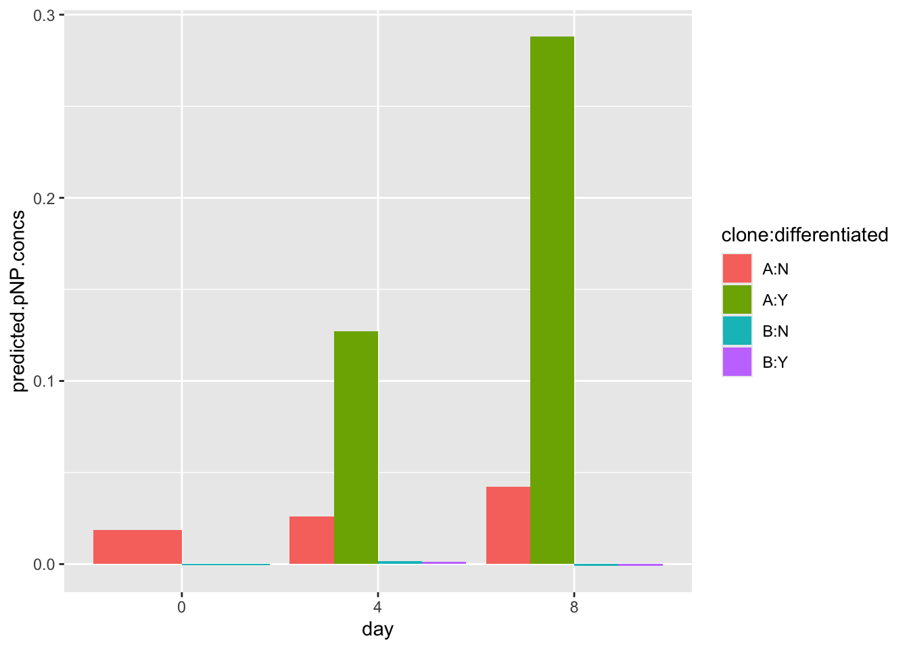

#install a new package
install.packages("gganimate")BIO00066I Workshop 4
Cell Biology Data Analysis Workshop 4
1 Learning objectives
Philosophy
- Workshops are not a test.
- Don’t worry about making mistakes.
- The staff are here to help.
1.1 Technical skills
Today, we will learn how to:
- Use a linear model to predict some y values, given some x values
- In our case we use absorbance (x values) to predict alkaline phosphatase activity (y values)
- Make animated plots with
gganimate
1.2 Thinking like a data scientist
It might seem like a lot of trouble to use R to read in a small number of x and y values from an Excel sheet to a standard curve, and then estimate some new y values. We could probably do this in Excel.
But what if we have 200 standard curves, and we want to automate the process? What if we have 50,000 x and y values and a non-linear model? For big data, R (or some similar software) is the only sensible way. NB: There are similar software for statistical analysis, but we don’t teach them here. R is currently the state of the art for analysis of biological data. And it’s free.
2 Introduction
2.1 The biology
We saw in workshop 3 that clone A moves faster than clone B. This time we will use R to explore MCS cell movement in more depth. Use x and y coordinates from manually tracked cells. We have 10 manually tracked cell lineages of clone A and 9 manually tracked cell lineages of clone B. Today, we will explore the ways these lineages move.
To help address our research question of whether morphology and migration can be used to predict MSC phenotype, we also need to investigate the phenotype (ability to differentiate) of the two clonal lines. In practical 4 we’ll explore the potency of the two clonal lines by looking at their capacity to undergo osteogenesis (differentiate into osteoblasts - bone cells) when they are given an inductive media.
We can use an enzyme called alkaline phosphatase as a biomarker to quantify osteogenesis in the cells, as the activity of the enzyme increases in cells undergoing osteogenesis as osteoblasts use the enzyme when producing bone extracellular matrix. To measure the activity of the enzyme we mix the lysate (cellular contents) of the cells with the substrate for the enzyme, para-nitrophenyl phosphate (pNPP) and measure the rate of product formation over time. The product of the reaction is para-nitro phenol (pNP) and we can measure it colorimetrically as it absorbs light at a known wavelength.
Creating a standard curve and estimating values from this curve is Part 1 of our analysis today. Part 2 is looking at cell movement data.
Same coding methods, different data
The methods we use to examine cells moving on x and x coordinates would be used any location data that tracks objects objects in a two-dimensional plane over time; traffic, birds, slugs, people. with consent
2.2 Research questions
- What is the osteogenic potential of clonal lines A and B (Part 1)
- Can we see differences in how clonal lines A and B move?
- How can we display this data visually?
- Do cells ‘follow’ each other in the petri dish?
2.3 The data
2.3.1 Part 1: pNP absorbance values
Once you’ve completed Practical 4 you’ll have your own data to use to make the standard curve of pNP and absorbance values for each of the clonal line time points. You should use your own standard curve data from the practical as well as your unknown values as the readings for absorbance will vary based on the plate the samples are in and the plate reader used.
To create the standard curve you have the absorbance readings for 8 concentrations of pNP in triplicate. To measure osteogenesis in the two clonal lines, samples of the cells were grown in an inductive media for 8 days. The cells were then lysed at different time points to measure the quantity of alkaline phosphatase and explore how it varies over time and between the two clonal lines. The clonal lines were analysed at Day 0, Day 4 and Day 8. At each time point you have data for both induced cells and non-induced cells (negative control), with the exception of Day 0 as the differentiation was induced at Day 1. There are four repeated measures for the data at each time point.
2.3.2 Part 2: manually-tracked cell movement ‘point’ data
The Livecyte data that tracked cells automatically was unreliable. In workshop 3 we looked at some manual tracking data. This contained information like track.length, the meandering.index, euclidean.distance and so on. This time we look at manual data in it’s raw form: x and y coordinates of the cells, tracked over time.
We can of course extract information from this about how far the cells travel, and how fast they travel (because we have distance and time measurements). But, we can do much more. This time we will be able to visualise the paths they take in culture dish. We may observe interesting patterns by studying this data.
3 Exercises (Part 1): Standard curve
To quantify the concentration of pNP and therefore the activity of the enzyme in unknown samples we’ll create a standard curve of known values of pNP and then interpolate the unknown pNP values in our sample from this.
3.1 Load libraries (install packages)
First, install the gganimate package. We will use this to creating moving plots later. You only need to do this once.
Then load all the libraries we’ll need today.
3.2 Load data
First, read in some ata from an Excel file. You can obtain an example file from here. Click to download, and then save the file in your raw-data directory. If you don’t have a raw-data directory, make one!
Then read in the Excel file. Two important things to note about reading Excel files:
- we use
sheet=1to specify that we want the first sheet (or tab) - we use
skip=3to specify that we want to skip the first three lines (because they are comments, not data)
ap<-read_excel("raw-data/example_alkaline_phosphatase_activity_assay-2024-03-21.xlsx", sheet=1, skip=3)
#check what we have
view(ap)Then simplify the data with pivot_longer:
ap.pivot <-
ap |>
select(-mean.abs, -standard.deviation) |>
pivot_longer(-pNP.conc, names_to = "rep", values_to = "absorb")
view(ap.pivot)Reorder the columns, so it is more intuitive for us using relocate:
ap.pivot <- relocate(ap.pivot, absorb)3.3 Plot enzyme data
Let’s make a simple plot, adding a line that shows the linear model with the line geom_smooth(method="lm"). The method="lm means plotting a linear model.
#plot, saving thr plot in an object called 'pNP.plot'
pNP.plot <- ap.pivot |>
ggplot(aes(x=absorb, y=pNP.conc))+
geom_point()+
geom_smooth(method="lm")
#show the plot
pNP.plot
Now save the plot:
ggsave("pNP.plot.pdf",pNP.plot)
Optional: How close are the replicates?
How similar to the linear models look if you use: ggplot(aes(x=absorb, y=pNP.conc,colour = rep))
3.4 Make and use a linear model
linear_model <- lm(pNP.conc ~ absorb , data = ap.pivot)Now we have the linear model, if we have some some pNP absorbence values, we can make a prediction of the pNPP enzyme concentrations. We have put some mock pNP values in the excel file example_alkaline_phosphatase_activity_assay-2024-03-21.xlsx, in sheet two. You’ll need to adjust the code below to correct sheet=0, skip=0.
mock<-read_excel("raw-data/example_alkaline_phosphatase_activity_assay-2024-03-21.xlsx", sheet=0, skip=0)
#check what we have
view(mock)Now we calculate the average for each of the three explicates using mutate. Note that mutate is a very useful function for creating new columns using existing ones. It can also join text columns. We can also use select after the mutation to remove the replicate columns.
We named our mean absorbance absorb because we specified the absorb variable in the code linear_model <- lm(pNP.conc ~ absorb , data = ap.pivot) above. So our linear model is ‘looking for’ an absorb variable to use.
4 Predict values based on a linear model
Here is how do it, using the predict function:
#calculate predicted pNP concentration using the linear model
predictions.from.lm <- predict(linear_model,mock)
#Add these predictions from the linear model (predictions.from.lm)
#As a new column
mock$predicted.pNP.concs = predictions.from.lm
#check what we have
view(mock)
#And save all our data (give your Rda file a sensible name!)
save.image("chocolate-fish.Rda")4.1 Making a bar plot of predicted pNP concetrations
First, we need to ensure that the day, clone and differentiated columns are set as **factors*. This is important because we want to treat these columns as categories, not numeric values:
Then we can make a plot:
#make the plot
ggplot(data=mock, aes(x=day, y=predicted.pNP.concs,fill=clone:differentiated)) +
geom_bar(stat="identity", position=position_dodge())
Note that this dummy data may look very different from your real data.
4.2 End of Part 1.
5 Exercises (Part 2): Exploring MCS movement
5.1 Loading data
First, load the data from the website, and check what you have:
#load data from a URL
points<-read_csv(url("https://djeffares.github.io/BIO66I/points.data.2024-03-16.csv"),
col_types = cols(LID = col_factor(),TID = col_factor(),pid = col_factor())
)
#check what we have
glimpse(points)
head(points)5.2 What is in the ‘point’ data?
This data contains the positions of cells, tracked over time. Lineages are tracked. We have data for tracked cells for both clones (A and B). We have the following information, for many time points:
- lineage ID (LID)
- tracking ID (TID)
- data point id* (pid)
- the location of the cell in x and y coordinates (x.position, y.position)
- the time point (time)
- movement metrics (track.length, euclidean.distance, velocity)
- a new movement metric: howfar the cell moved between this time ppint, and thr last one (jump.distance)
- clone (A/B)
NB: pid describes what data point the row of data corresponds to for a cell with a specific LID and TID. For example, LID 1 TID 1 PID 1 would correspond to the first data point (it’s x and Y coordinates etc) for a cell with TID 1 from lineage 1.
5.3 Exploratory plots
5.3.1 Recap: how fast do they move
You’ll notice that this file has velocity, just like the last file we used in workshop 3. For a simple ‘sanity check’, we will tests again that the clones differ.
Caution
We know that clone A moves faster than clone B. So why do it again?
Answer: data hygiene. We want to be very sure our data is good.
points |>
ggplot(aes(x=clone,y=log10(velocity)))+
geom_violin()+
stat_compare_means()
What does this do?
To find out what any function does, type ?function in the RStudio Console. For example to find out what glimpse does:
?glimpse5.3.2 Plotting cell movement tracks
Now, let’s examine the directions do the cells move in. A simple way to do this is to plot the x and y coordinates. We will use facet_wrap to plot one boz for each lineage ID LID. Remember, a lineage ID contains information for each cell, and all its daughter cell and so on.
To keep our image simple, we allow clone A and clone B to be on the same panels. But note that clone A, lineage ID 1 has no relationship to clone A, lineage ID 2 - they are merely the first lineage ID that Amanda tracked.
points |>
ggplot(aes(x=x.position,y=y.position,colour=clone))+
geom_point(size=1)+
facet_wrap(~LID)
#If we want to show just one clone add this line after 'points |>'
#filter(clone == "A")|>We can see that they wriggle about a lot. They do not move in straight lines. To show one lineage, from one clone and colour by TID (or time), we can do:
points |>
filter(clone == "B" & LID==4)|>
ggplot(aes(x=x.position,y=y.position,colour=TID))+
geom_point(size=1)5.4 Scatter plots to show cell movement range intuitively
If we want to view how far many different cells have moved, we will need to adjust their point locations, so the median of their x.positions and x.positions are zero. Effectively setting all their start positions to x=0,y=0 on a grid.
We can use some simple math and the mutate function to achieve this:
Plot the ‘centralised’ (x=0,y=0) cell positions. We use facet_wrap to show each clone on a different panel.
points2 |>
ggplot(aes(x=adjusted.x,y=adjusted.y,colour = time))+
geom_point(alpha=0.5, size=3)+
geom_hline(yintercept = 0)+
geom_vline(xintercept = 0)+
facet_wrap(~clone)5.5 Animate it!
ggplot2 can achieve almost any plot you can image (and probably some you cant imagine!). To create very visually appealing graphics can help enormously to explain complex data. Animated plots are much more intuitive for explaining data with a time element.
Here is now to make an amimated plot with gganimate:
5.5.1 Animate: step 1.
Make a static plot:
static.plot <-points |>
filter(clone == "B", LID == 1) |>
ggplot(aes(x=x.position,y=y.position, colour=TID))+
geom_point(size=10, pch=1,lwd=2)
static.plotHere we only look at one clone and one lineage ID in the linefilter(clone == "B", LID == 1) |>
You can (and should) alter the code to look at other clone and lineage IDs. You might also like to try these alternatives:
colour=timefacet_wrap(~LID)geom_point(size=5, pch=1)
5.5.2 Animate: step 2
Animate the plot:
#set up the animation code
animated.plot <- static.plot +
transition_time(time) +
shadow_mark(past = T, future=F, alpha=0.5)
#check the animation worked
animate(animated.plot, width =800, height = 800)5.5.3 Animate: step 3
Save the animation as a GIF:
#save the animation as a gif
#make sure you use a sensible file name
anim_save("cloneB.ineage2gif", animated.plot)See this website to learn more about gganimate.
That is all for this workshop today. If you have time do look at the revision summary below.
6 Revision
This section will summarise what we have learned in the BABS core workshop and cell biology workshops; workshop 2, workshop 3 and workshop 4 (this one).
If you don’t recall, or are unsure about, any of these topics - look at them again. Two principles of data science are worth recalling now:
1. Technical skills are important
To be a skilled data analyst, you need to master some technical skills. This is worth putting time and effort into, because there is a demand for skilled data analysts, both within and outside of science. This website is an example.
In this module you have learned these technical skills:
- loading libraries and installing packages
- importing data
- filtering rows to obtain subset of the data (using
filter) - selecting columns to keep data simple (using
select) - creating plots
2. Data-handling principles are also important
These are:
- keep files and scripts organised
- name variables carefully
- comment your code
- make your analysis clear and reproducible
We will now summarise and review what we have learned in each workshop.
6.1 Data Analysis 1: Core
In this workshop, we learned:
- How to achieve reproducibility
- Setting up an RStudio Project
- Loading packages
- The importance of looking at, and knowing, your data
- Creating plots with
ggplotto help with knowing your data - Quality control
It is the undertanding that matters
Understanding takes time. Be sure you understand all these concepts well.
6.2 Workshop 2: Cell Biology
In this workshop, we learned about:
- Loading data from websites with
read_tsvandread_csv. - Exploring data with
view,names,ncol,ncol,nrow,summary, andglimpse - Summarising large data sets with
dplyr - Making plots to compare two or more categories with
geom_boxplot,geom_violin, andgeom_jitter - The differences between P-values and plotting small vs large data
What does this do?
To find out what any function does, type ?function in the RStudio Console. For example to find out what glimpse does:
?glimpse6.3 Workshop 3: Cell Biology
In this workshop, we learned about:
- Using
summaryto describe a large data frame - Adjusting plot with a log scale (often important for biological data)
- Using
facet_wrapto create multiple panels for different replicate and so on - ‘Reshaping’ data tables with
pivot_longer - Correlations between metrics in data sets (this is very common in biological data)
- Creating a correlation heat map
6.4 Workshop 4: Cell Biology (this workshop)
We learned:
- How to make and use a linear model to infer values from a standard curve
- How to plot objects on two-dimensional planes
- How to use
facet_wrap(again) - How to animate plots!
7 Reflection
Ask yourself, and discuss with your classmates:
- What is your favourite way to quickly get to know a data set?
- Why do we make plots?
- Is a statistical test always reliable? What if our data set is very small? (or very large?)
- What is the value of both laboratory work and data analysis?
- Would you prefer to do laboratory work, data analysis, or both?
7.1 Consolodation exercises
To consolidate, follow up on aspects of the previous workshops that you are unsure about. Try some different plots. Break the code, then try and fix it.
7.2 Planning for your report
The RStudio Project should:
Create a logical folder structure for your analysis. The top folder should be named with your exam number, for example Y12345678, do not include your name in the submission. Your submission should include the script you used for your work, any accessory functions and the data itself. Your script should be well-commented, well-organised and follow good practice in use of spacing, indentation and variable naming. It should include all the code required to reproduce data import and formatting as well as the summary information, analyses and figures in your report.
8 Supplementary analysis: three-way ANOVA
In practical 4, you collected absorbance readings for concentrations of pNP in triplicate, to provide an indication of the two clones to undergo osteogenesis. pNP concentrations were measured in day 0,4 and 8, and at each time point you have data for both induced cells and non-induced cells (negative control), with the exception of day 0 as the differentiation was induced at day 1.
To find out which the conditions affect the pNP, we can carry out a three-way ANOVA is used to compare the effects of three grouping variables (day, clone and induction condition) on the one response variable (pNP concentration).
The methods below show you how to do this. We first start by assuming that the grouping variables do not interact (ie: combinations of two factors don’t cause different outcomes to each factor alone), in what is called an additive model.
But the three grouping variables may have interacting effects, and not be independent. So then we then examine a non-additive (or multiplicative) model. You’ll see more clearly what this means as you do the analysis.
An example of a multiplicative model
Two people (A and B) walk back to their hotel, in a city they don’t know well. Last time, when they both had their phones, it took 30 minutes. When person A lost their phone, so it took 35 minutes (ie: +5 minutes). When both A and B lost their phones, it took 60 minutes. This much longer we would expect the lost-phones problem was simply an additive effect of two phone being lost (30 + 5 + 5). The problems were multiplicative rather than merely additive.
8.1 Read data and reformat with pivot_longer
We’ll assume you have the tidyverse and readxl libraries load already. If not load these now.
First, we load the data. Your data file might have a different name. This code will work without adjustment of your file has the same rows and columns as this example file. We’ll also rename a column, so it’s more intuitive.
#load the data
ap<-read_excel("raw-data/alkaline-phosphatase-activity-assay-real-data.xlsx",sheet=2)
#rename the 'differentiated' column 'induced', which describes it better
names(ap)[3]<-'induced'Then we need to set some columns to be factors:
Now we use pivot_longer to reformat the data, so we can use all the repeats. The cols=!c(day,clone,differentiated) part indicates that the day,clone,differentiated columns are not to be lengthened in to the ‘absorb’ column. So it is onlyabsorptionrep1,absorptionrep2 and absorptionrep3 that are put into the ‘absorb’ column.
ap.pivot<-ap |>
pivot_longer(cols=!c(day,clone,induced), names_to = "rep", values_to = "absorb")
#this is what we have now
head(ap.pivot)8.2 Make some plots
If we look at the absorbance by day, we can see that absorbance goes up each day. Here we are ignoring the media (induced).
ggplot(ap.pivot, aes(x = clone, y = absorb, color = day))+
geom_boxplot()+
theme_classic()Then we can use facet_wrap to examine the data by day and by media. We can see that clone A has much higher values in the differentiation media.
ggplot(ap.pivot, aes(x = clone, y = absorb, color = day))+
geom_boxplot()+
theme_classic()+
facet_wrap(~induced)8.3 ANOVA (additive model)
To find out if there is evidence that the absorbance value affected by day, clone or media using an ANOVA, we can use the the R function aov().
#we save the result in an object called aov.result.additive
aov.result.add <- aov(absorb ~ day + clone + induced, data = ap.pivot)To view the results, we do:
summary(aov.result.add)
Interpretation
When p-values are < 0.05, this means we have a significant effect from this factor. Do day, clone, and the induction media all have a significant effects?
8.4 ANOVA (multiplicative model)
Now then examine a multiplicative (non additive) model. Here we examine whether interactions between the factors affect the pNP levels. To test this, we simple replace the plus symbol (+) with an asterisk (*) in our code:
Interpretation: The multiplicative model all single factors, all pairwise factors (eg: day:clone) and the interaction of all three factors(day:clone:induced). Where the p-values Pr(>F) are < 0.05, we have a significant effect of this factor (or factors) on the pNP level (and therefore osteogenesis).
9 The End
Did you know ANOVA’s were invented for biological data?
ANOVA’s were invented by a RA Fisher, a British mathematician, statistician, biologist and geneticist. Fisher also had a big influence on evolutionary biology.